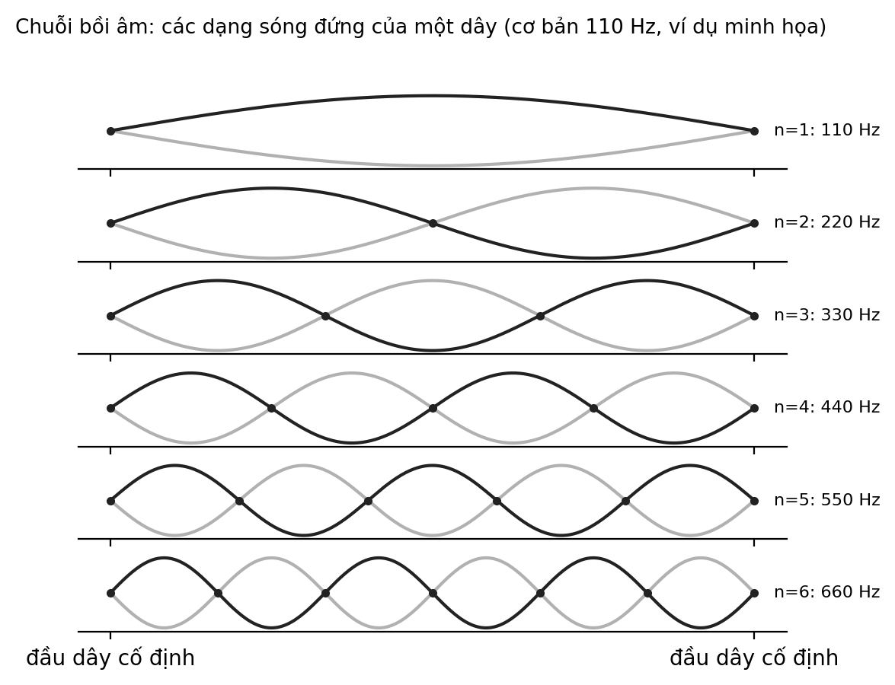

8 Vật lý của sự rung động
Một học sinh căng một sợi dây chun qua miệng một chiếc hộp giấy và búng. Âm thanh trầm, hơi lè nhè. Em kẹp một ngón tay vào giữa dây và búng lại, âm thanh cao hơn hẳn. Em nhìn cô, rồi nhìn sợi dây, như vừa phát hiện một bí mật. Không có bí mật nào cả: đó là vật lý, và nó có thể nghe được ngay trên tay mình.
Câu hỏi trung tâm
Dao động, tần số, bồi âm và cộng hưởng giải thích điều gì ta nghe được trong âm nhạc, và làm sao nghe an toàn? Đây là chương ít gây tranh cãi nhất của cuốn sách, vì phần lớn nội dung là vật lý đã được xác lập từ lâu. Điều chúng ta sẽ cẩn thận ở đây không phải là sự thật vật lý mà là hai chỗ chuyển: từ vật lý sang trải nghiệm nghe, và từ trải nghiệm sang cách dạy.
Năm thuật ngữ nền
Tần số là số lần dao động hoàn chỉnh mỗi giây, đo bằng héc (Hz); âm có tần số cao nghe cao hơn. Bồi âm (harmonic, overtone) là các thành phần có tần số bằng số nguyên lần tần số cơ bản đi cùng một âm nhạc cụ. Âm sắc (timbre) là điều làm cho cùng một nốt trên đàn bầu và trên sáo nghe khác nhau. Cộng hưởng (resonance) là hiện tượng một vật dao động mạnh khi bị kích thích đúng tần số riêng của nó. Đề-xi-ben (dB) là thang logarit để đo mức âm lượng.
Cách đọc chương này
Mỗi phát biểu vật lý trong chương này có thể kiểm tra bằng một thí nghiệm đơn giản hoặc trong các giáo trình âm học cơ bản (Fletcher & Rossing, 1998; Rossing, 2014). Chúng ta không gắn nhãn bằng chứng giáo dục cho những phát biểu ấy. Nhãn chỉ dùng cho những điều thuộc về nhận thức, như vì sao một số tổ hợp âm nghe hòa hợp, và cho những điều thuộc về dạy học. Chương cũng kết thúc bằng một phần không thể bỏ qua: nghe an toàn.
Chương đi theo năm bước: rung động và tần số; chuỗi bồi âm và âm sắc; cộng hưởng và âm vang của phòng; nghe và bảo vệ thính giác; và cách dạy các nội dung ấy bằng trải nghiệm. Hai hoạt động ở cuối chương dùng dây chun và tiếng vỗ tay, với âm lượng nhỏ.
1. Rung động và tần số
Mọi âm thanh bắt đầu từ một vật rung. Sợi dây, màng trống, cột không khí trong ống sáo, dây thanh của người hát: tất cả đẩy và kéo không khí xung quanh, tạo ra những vùng nén và giãn lan truyền thành sóng âm. Trong không khí ở nhiệt độ phòng, sóng âm đi với tốc độ khoảng ba trăm bốn mươi mét mỗi giây (Rossing, 2014). Tai nhận những thay đổi áp suất ấy và não diễn giải chúng thành âm thanh.
Cao độ mà ta nghe liên hệ chặt chẽ với tần số của dao động. Nốt La mà các nhạc công thường dùng để lên dây có tần số bốn trăm bốn mươi héc, nghĩa là dây hay cột không khí dao động bốn trăm bốn mươi lần mỗi giây. Một nốt cao hơn một quãng tám có tần số gấp đôi, tức tám trăm tám mươi héc. Người trẻ khỏe mạnh thường nghe được dải từ khoảng hai mươi héc đến hai mươi nghìn héc, và dải này thu hẹp dần khi tuổi tăng, đặc biệt ở các tần số cao (Moore, 2012).
Với một sợi dây, tần số phụ thuộc vào ba điều: chiều dài, độ căng và khối lượng trên mỗi đơn vị dài. Dây ngắn hơn thì cao hơn; dây căng hơn thì cao hơn; dây nặng hơn thì thấp hơn. Trong trường hợp lý tưởng, rút ngắn dây còn một nửa làm tần số tăng gấp đôi, tức lên đúng một quãng tám (Benade, 1990). Đây là lý do vì sao những ngón tay nhấn lên phím đàn hay lên cần đàn thay đổi cao độ, và cũng là lý do vì sao một sợi dây chun búng ở hai vị trí cho hai âm khác nhau mà người học nghe được ngay.
Một tính nhẩm nhỏ giúp hình dung. Nếu giữ lại hai phần ba chiều dài dây, tần số tăng lên một lần rưỡi, tức tỷ lệ ba trên hai, và ta nghe ra một quãng năm đúng (Rossing và c.s., 2002). Chiều dài sóng âm cũng liên hệ với tần số qua tốc độ truyền: sóng âm bốn trăm bốn mươi héc trong không khí dài khoảng bảy mươi tám phần trăm mét, tức khoảng một phần tư độ cao của một người lớn đứng thẳng. Những con số này đủ để học sinh thấy rằng cao độ, chiều dài và tỷ lệ là những mặt của cùng một hiện tượng.
Tương quan giữa tần số và cao độ không hoàn toàn một đối một. Cao độ là một cảm giác, còn tần số là một đại lượng vật lý. Tai ta có thể nghe một cao độ ngay cả khi thành phần có tần số thấp nhất, tức âm cơ bản, bị lược đi và chỉ còn lại các bồi âm của nó, một hiện tượng được mô tả trong các giáo trình về tâm lý học thính giác Giả thuyết (Moore, 2012). Nói cách khác, não không chỉ đo tần số mà suy ra cao độ từ cả mẫu các thành phần.
2. Chuỗi bồi âm và âm sắc
Một sợi dây không chỉ rung ở một tần số. Nó rung đồng thời ở nhiều dạng, gọi là các sóng đứng, mỗi dạng có tần số bằng một số nguyên lần tần số cơ bản: gấp đôi, gấp ba, gấp bốn và cứ thế. Đó là chuỗi bồi âm. Nếu âm cơ bản là một trăm mười héc, các thành phần tiếp theo ở khoảng hai trăm hai mươi, ba trăm ba mươi, bốn trăm bốn mươi héc, và những tần số cao hơn nữa (Fletcher & Rossing, 1998; Hall, 2002).

Âm sắc, cái khiến một nốt trên đàn và một nốt trên sáo cùng cao độ vẫn nghe khác, một phần lớn đến từ mức độ của từng bồi âm, tức bồi âm nào mạnh, bồi âm nào yếu, và cách chúng thay đổi theo thời gian. Công trình kinh điển của Helmholtz đã đặt nền cho cách hiểu này (Helmholtz, 1863/1954). Vì vậy một nhạc cụ không chỉ phát ra một tần số mà phát ra một “mẫu” tần số, và tai nhận ra mẫu ấy như một đặc điểm của nhạc cụ.
Một ví dụ gần gũi là đàn bầu, nhạc cụ một dây của Việt Nam. Theo cách mô tả phổ biến, người chơi chạm nhẹ một bên bàn tay vào những điểm nhất định trên dây để nhấn mạnh một bồi âm, nhờ đó nghe ra các âm cao trong trẻo cùng với những âm uốn lượn nhờ cần đàn Thực tiễn sư phạm. Chúng ta chưa dẫn nguồn riêng cho mô tả này trong chương, nên đọc nó như một ví dụ minh họa chứ không như một khẳng định đã được kiểm chứng ở đây.
Chuỗi bồi âm còn là điểm xuất phát cho câu hỏi vì sao một số tổ hợp âm nghe hòa hợp. Khi hai âm có tần số theo tỷ lệ đơn giản, như hai trên một hay ba trên hai, nhiều bồi âm của chúng trùng nhau, và ít xuất hiện những tiếng “đập” thô ráp do hai tần số rất gần nhau. Một nghiên cứu cổ điển cho thấy mức hòa hợp mà người nghe cảm nhận liên quan đến khoảng cách giữa các tần số so với một độ rộng gọi là băng tần tới hạn Sơ bộ (Plomp & Levelt, 1965). Đây là một cách giải thích có sức nặng, và Helmholtz cũng đề xuất cách giải thích theo hướng thô ráp và tiếng đập Giả thuyết (Helmholtz, 1863/1954), nhưng nó không giải thích hết sự khác biệt giữa các nền văn hóa, như ở Chương 1 chúng ta đã thấy về những ưa thích khác nhau.
Một hướng tiếp cận khác chỉ ra rằng âm sắc và thang âm liên hệ với nhau: nếu các bồi âm của một nhạc cụ không theo tỷ lệ số nguyên, như ở nhiều nhạc cụ gõ, thì những tổ hợp nghe hòa hợp nhất cũng sẽ khác với thang âm phổ biến ở nhạc cụ có bồi âm đều Giả thuyết (Sethares, 2005). Ý tưởng này giải thích vì sao nhiều truyền thống có thang âm gắn với nhạc cụ của mình, và nó mở một cánh cửa nhỏ cho việc học sinh khám phá tại sao âm nhạc ở những nơi khác nhau có thể nghe khác nhau mà không phải do ai “sai”.
Còn một hiện tượng nữa dễ thử bằng hai nhạc cụ hay hai chiếc đũa gõ: khi hai âm có tần số rất gần nhau cùng vang lên, ta nghe thấy âm to nhỏ lên xuống đều đặn, gọi là phách đập, với tốc độ bằng hiệu của hai tần số. Hiện tượng này chính là điều khiến những quãng rất gần nhau nghe thô ráp, và nó cũng là cách các nhạc công lên dây: họ chỉnh cho tiếng đập chậm dần rồi biến mất (Olson, 1967).
3. Cộng hưởng và âm vang của phòng
Hãy nghĩ đến một chiếc xích đu. Nếu bạn đẩy đúng lúc, mỗi cái đẩy nhỏ cộng dồn lại và xích đu đung đưa cao. Nếu đẩy sai lúc, những cái đẩy triệt tiêu nhau. Mọi vật dao động có một hay nhiều tần số riêng, và khi bị kích thích đúng các tần số ấy, nó đáp ứng rất mạnh. Đó là cộng hưởng (Benade, 1990).
Cộng hưởng nằm ở trung tâm của hầu hết nhạc cụ. Thùng đàn khuếch đại và tô màu cho âm thanh của dây vì nó cộng hưởng với một số tần số; ống sáo chọn ra một số tần số vì cột không khí bên trong chỉ cộng hưởng ở những tần số nhất định; một chiếc chai khi thổi ngang miệng phát ra một âm vì khoang không khí của nó cộng hưởng. Giọng hát của người cũng vậy: các khoang ở cổ họng và miệng cộng hưởng ở một số tần số và làm nổi bật những bồi âm quanh đó (Sundberg, 1987). Khi ta đổi hình dạng miệng để nói a, i hay u, ta đang đổi tần số cộng hưởng và vì vậy đổi âm sắc của nguyên âm.
Phòng cũng là một bộ cộng hưởng. Âm thanh trong phòng không chỉ đến tai ta trực tiếp mà còn dội qua tường, trần và sàn nhà trước khi tắt dần. Thời gian âm còn vang sau khi nguồn phát dừng là thời gian vang, và một công thức đơn giản của Sabine cho thấy nó tăng theo thể tích phòng và giảm khi bề mặt hấp thụ âm nhiều hơn (Kuttruff, 2009). Một phòng tắm với nhiều bề mặt cứng như gạch và kính vang lâu; một phòng ngủ với chăn, rèm và nệm vang ngắn.
Điều này quan trọng với âm nhạc và với lời nói. Thời gian vang dài làm giai điệu nhòe vào nhau và làm lời khó nghe; thời gian vang rất ngắn làm âm thanh khô và thiếu sức sống. Các phòng hòa nhạc được thiết kế để thời gian vang phù hợp với loại nhạc dự định biểu diễn (Beranek, 2004). Một lớp học với tường bê tông, nền gạch và nhiều học sinh nói cùng lúc thường có âm thanh khó nghe, và giáo viên hay phải nâng giọng; việc tăng hấp thụ âm, chẳng hạn bằng rèm, tranh vải hay giá sách, là một cách giảm mệt cho cả giáo viên và học sinh Thực tiễn sư phạm (Kuttruff, 2009).
Phòng còn có những tần số cộng hưởng riêng, gọi là các mode của phòng, nên một số nốt trầm có thể nghe to hơn hẳn ở một góc phòng so với góc khác. Người tập đàn trong một phòng nhỏ thường gặp điều này mà không biết nguyên nhân. Biết điều đó giúp học sinh hiểu vì sao âm thanh của cùng một bài thay đổi khi đổi chỗ đứng, và vì sao hát trong phòng tắm nghe “hay” hơn: phòng tắm vang lâu, làm giọng hát đầy lên, và thường che bớt những chỗ lệch cao độ.
Một lưu ý để không nói quá: kiến trúc phòng ảnh hưởng đến cách ta nghe, nhưng không có “kiến trúc huyền diệu” nào tự nó làm ta thông minh hay khỏe mạnh hơn. Chúng ta sẽ quay lại giới hạn này ở Chương 9.
4. Nghe thế nào và bảo vệ thính giác
Tai ngoài thu sóng âm, tai giữa chuyển chúng thành dao động cơ học, và ốc tai trong tai trong biến dao động thành tín hiệu thần kinh. Các tế bào lông trong ốc tai đáp ứng với những tần số khác nhau ở những vị trí khác nhau, và chúng không tái tạo được khi bị tổn thương nặng (Moore, 2012). Chính vì vậy việc bảo vệ thính giác là việc của cả đời.
Mức âm lượng thường được đo bằng đề-xi-ben, một thang logarit. Điều đó có nghĩa là mỗi lần tăng mười đề-xi-ben, năng lượng âm tăng gấp mười, còn cảm giác to lên chỉ khoảng gấp đôi (Moore, 2012). Một âm thanh chỉ lớn hơn năm hay mười đề-xi-ben so với âm thanh khác có thể đã gây hại hơn nhiều so với cảm giác ban đầu của ta.
Tổ chức Y tế Thế giới và Liên minh Viễn thông Quốc tế đã công bố một tiêu chuẩn về thiết bị nghe an toàn. Với người lớn, mức tham chiếu là tám mươi đề-xi-ben trong tối đa bốn mươi giờ mỗi tuần; với trẻ em, mức này thấp hơn, bảy mươi lăm đề-xi-ben (World Health Organization & International Telecommunication Union, 2019). Cùng nguồn ước tính rằng khoảng 1,1 tỷ người trẻ trên thế giới có nguy cơ mất thính lực do nghe âm lượng lớn, kể cả nhạc nghe qua thiết bị cá nhân (World Health Organization & International Telecommunication Union, 2019). Trước đó, nhiều chuyên gia ở Hoa Kỳ từ thập niên 1970 dùng mức tám mươi lăm đề-xi-ben làm giới hạn an toàn, vốn xuất phát từ môi trường lao động.
Hãy diễn đạt những con số ấy thành thói quen cụ thể. Giữ âm lượng tai nghe ở mức vừa phải, nghe được người bên cạnh nói chuyện bình thường là một dấu hiệu thực tế; nếu không thì quá to. Nghỉ ngơi sau những buổi nghe dài. Với trẻ em, đặt giới hạn âm lượng trên thiết bị nếu có. Tránh đứng gần loa ở những buổi biểu diễn lớn, hoặc dùng nút chống ồn. Các ứng dụng đo âm lượng trên điện thoại chỉ cho số gần đúng; chúng giúp so sánh tương đối, không thay cho dụng cụ đo chuẩn.
Một dấu hiệu cảnh báo cần biết: ù tai hoặc cảm giác nghe như bị bịt sau một buổi nhạc lớn là dấu hiệu tai đã quá tải. Nếu những dấu hiệu ấy kéo dài hơn một hai ngày hoặc lặp lại, hãy đi khám. Chúng ta không đưa ra chẩn đoán ở đây; điều quan trọng là không bỏ qua một dấu hiệu mà cơ thể đang nói.
Một lưu ý riêng cho lớp học: không bao giờ làm thí nghiệm âm thanh với âm lượng lớn, và không để học sinh áp loa hay nhạc cụ vào tai bạn. Một hoạt động hay buổi biểu diễn nên có một người chịu trách nhiệm về âm lượng. Với học sinh có dấu hiệu nghe kém, như thường xin nhắc lại hay quay đầu để nghe, hãy trao đổi với gia đình để đi khám thính học Thực tiễn sư phạm.
5. Dạy vật lý bằng trải nghiệm
Vật lý của âm thanh là một cơ hội hiếm cho một dạng học mà học sinh vừa nghe, vừa thấy, vừa chạm. Chúng ta có thể giữ lại một mệnh đề thận trọng: nghe thụ động khác với chơi và hiểu cấu trúc. Trong chương này, mệnh đề giải mã thành ba điều. Nghe một nốt không cho biết vì sao nó cao hay thấp; búng một sợi dây và đổi chiều dài của nó thì cho biết. Học sinh tự thay đổi một điều, quan sát điều khác thay đổi, rồi giải thích, là một chu kỳ học khác với việc nghe giáo viên kể. Và vì vậy, hoạt động thực hành cho phép nối trải nghiệm với cấu trúc vật lý.
Một cách thiết kế thường dùng là chu kỳ dự đoán, quan sát và giải thích. Học sinh nói trước điều mình nghĩ sẽ xảy ra khi đổi chiều dài dây, rồi làm, rồi giải thích vì sao kết quả khớp hay khác với dự đoán. Chu kỳ này giữ vai trò chủ động của học sinh, và cho giáo viên thấy những hiểu lầm sẵn có. Đây là một thực hành sư phạm quen thuộc; chúng ta không có thử nghiệm đối chứng nào về nó trong chương này Thực tiễn sư phạm.
Có hai lưu ý để tránh nói quá. Thí nghiệm thực hành không tự động tạo hiểu biết: nếu thiếu câu hỏi dẫn dắt, học sinh có thể chỉ nghe thấy “một âm cao” mà không nối nó với chiều dài hay độ căng. Và vật lý âm thanh không làm trẻ giỏi toán hay vật lý nói chung; như ở Chương 7, bằng chứng cho chuyển giao xa là yếu. Điều có thể nói là nó cho những ví dụ giàu giác quan để dạy các khái niệm vật lý cụ thể như tần số, tỷ lệ và cộng hưởng Thực tiễn sư phạm.
Về mặt công bằng, đây là một trong những lĩnh vực mà vật dụng rẻ tiền làm được nhiều: dây chun, hộp giấy, cốc nhựa, chai nước và đồng hồ bấm giờ. Một lớp không có nhạc cụ vẫn có thể làm thí nghiệm âm học. Điều cần là thời gian, một không gian đủ yên, và một giáo viên dám để học sinh thử, sai và thử lại.
Hiện chưa có dữ liệu đủ lớn ở Việt Nam về hiệu quả của việc dạy vật lý âm thanh qua nhạc cụ trong trường phổ thông; đây là hướng nghiên cứu ưu tiên. Một nghiên cứu nhỏ khả thi là so sánh, trong cùng một khối lớp, hai nhóm cùng học khái niệm tần số, một nhóm qua thí nghiệm dây chun và một nhóm qua giải thích bằng hình vẽ, rồi kiểm tra ngay và sau vài tuần, bằng những câu hỏi dự đoán và giải thích.
Cơ chế và bằng chứng chính
| Phát biểu | Loại | Nguồn chính | Điều kiện / giới hạn |
|---|---|---|---|
| Cao độ liên hệ với tần số; rút ngắn dây một nửa tăng một quãng tám | Vật lý | (Benade, 1990; Fletcher & Rossing, 1998) | trường hợp lý tưởng; dây thật có sai lệch nhỏ |
| Âm sắc phụ thuộc mẫu bồi âm | Vật lý và nhận thức | (Fletcher & Rossing, 1998; Helmholtz, 1863/1954) | còn yếu tố biến đổi theo thời gian |
| Tỷ lệ đơn giản nghe hòa hợp liên quan đến băng tần tới hạn | Sơ bộ | (Plomp & Levelt, 1965) | không giải thích hết khác biệt văn hóa |
| Thang âm gắn với bồi âm của nhạc cụ | Giả thuyết | (Sethares, 2005) | ý tưởng có sức giải thích; chưa phải quy luật |
| Thời gian vang tăng theo thể tích và giảm khi hấp thụ nhiều | Vật lý | (Kuttruff, 2009) | công thức gần đúng |
| Mức nghe an toàn khuyến nghị cho thiết bị cá nhân | Chuẩn quốc tế | (World Health Organization & International Telecommunication Union, 2019) | 80 dB (người lớn), 75 dB (trẻ em), 40 giờ mỗi tuần |
| Thực hành dây chun, âm vang phòng trong lớp học Việt Nam | Thực tiễn sư phạm | không có thử nghiệm | khoảng trống dữ liệu |
Ứng dụng trong lớp học và gia đình Việt Nam
Hai hoạt động dưới đây dùng vật dụng sẵn có và âm lượng nhỏ.
Mục tiêu: Học sinh tự nghe và nối cao độ với chiều dài và độ căng của dây, qua việc búng một sợi dây chun trên một cái hộp.
Chuẩn bị: Mỗi nhóm hai hoặc ba em một hộp giấy hoặc cốc nhựa, hai hoặc ba sợi dây chun to nhỏ khác nhau. Không cần nhạc cụ.
Thời gian: 12 phút.
Các bước:
- Căng một sợi dây chun qua miệng hộp, búng nhẹ và lắng nghe. Mỗi em nói một từ mô tả âm thanh: cao, trầm, lè nhè.
- Dự đoán: nếu kéo căng dây hơn thì âm sẽ thay đổi thế nào? Cả nhóm nói trước rồi thử.
- Dự đoán và thử tiếp: nếu dùng ngón tay giữ dây ở giữa để chỉ còn nửa dây rung thì âm thế nào?
- So sánh dây chun to và dây chun nhỏ ở cùng độ căng. Nhóm nào ghi lại quy luật, ví dụ “dây ngắn hơn thì cao hơn”?
- Cả lớp chia sẻ và nối quy luật với các nhạc cụ có dây quen thuộc, như đàn bầu hoặc đàn tranh.
Quan sát gì: Các em có dự đoán đúng không, cách các em giải thích sự thay đổi, và có em nào nhận ra các tỷ lệ như một nửa hay gấp đôi không.
Biến thể: Mầm non: chỉ cho trẻ búng dây chun trên hộp và gọi tên cao hoặc thấp. Tiểu học: vẽ bảng ghi kết quả. THCS: dùng một ứng dụng đo tần số trên điện thoại, kiểm tra tỷ lệ một nửa so với gấp đôi và thảo luận vì sao dây thật không hoàn toàn lý tưởng. Gia đình: dùng hộp bánh và hai dây chun.
Lưu ý: Búng nhẹ, không để dây chun bắn vào mặt, và không dùng dây chun quá căng. Cẩn thận với dị ứng latex nếu có. Giữ âm lượng thấp.
Mức bằng chứng của hoạt động: Thực tiễn sư phạm. Cơ sở là vật lý của sợi dây ở mục 1; chưa có thử nghiệm đối chứng cho hoạt động này ở lớp học Việt Nam.
Mục tiêu: Nghe và đo bằng đồng hồ sự khác nhau về thời gian âm còn vang giữa các không gian, rồi nối với bề mặt cứng hay mềm.
Chuẩn bị: Một chiếc đồng hồ bấm giờ hoặc điện thoại. Hai hoặc ba không gian: lớp học, một phòng nhỏ có nhiều đồ mềm, một hành lang hoặc phòng vệ sinh với gạch.
Thời gian: 10 phút.
Các bước:
- Cả nhóm đứng ở giữa một không gian. Một em vỗ tay một tiếng gọn, nhẹ và dừng.
- Các em còn lại lắng nghe đến khi âm thanh vang tắt hẳn, rồi giơ tay. Một em bấm giờ để ước lượng thời gian tắt.
- Lặp lại ở không gian thứ hai và thứ ba.
- Viết ba kết quả cạnh nhau và dự đoán vì sao khác: bề mặt cứng hay mềm, phòng rộng hay hẹp.
- Thử thay đổi một điều, chẳng hạn mở rèm, che bảng bằng vải hoặc ngồi sát nhau, rồi so sánh.
Quan sát gì: Các em nghe thấy khác biệt nào, và có nối được với bề mặt không. Con số chỉ là ước lượng.
Biến thể: Mầm non: chỉ vỗ tay và hỏi “ở đâu nghe vang hơn”. Tiểu học: ghi thời gian bằng đếm nhịp tim hay đếm “một, hai, ba”. THCS: tìm hiểu mối liên hệ giữa thể tích phòng, bề mặt và thời gian vang. Gia đình: so sánh phòng tắm, phòng ngủ và bếp.
Lưu ý: Vỗ tay nhẹ và gọn, không hét hay thổi còi trong không gian kín. Với em nhạy cảm với tiếng động hãy cho phép làm người bấm giờ. Không vào những không gian không an toàn.
Mức bằng chứng của hoạt động: Thực tiễn sư phạm. Cơ sở là âm học phòng ở mục 3; chưa có thử nghiệm đối chứng cho hoạt động này ở lớp học Việt Nam.
Giới hạn và lưu ý đạo đức
Phần lớn nội dung vật lý của chương này đã được xác lập, nhưng các công thức là gần đúng và đúng nhất cho trường hợp lý tưởng. Những điều thuộc nhận thức, như vì sao tỷ lệ đơn giản nghe hòa hợp, còn được giải thích theo nhiều hướng, và chưa giải thích hết khác biệt giữa các nền văn hóa. Những điều thuộc dạy học, như vai trò của thực hành tự tay làm, chưa được chúng ta kiểm chứng bằng nghiên cứu riêng ở Việt Nam. Việc sử dụng các số liệu an toàn nghe cần được đọc như hướng dẫn quốc tế chứ không thay cho ý kiến của chuyên gia thính học.
Cần tính đến chi phí cơ hội và khả năng tiếp cận. Các hoạt động dùng vật dụng rẻ tiền, nhưng không phải lớp nào cũng có không gian yên tĩnh hay thời gian để làm thí nghiệm nhóm. Một lớp quá đông có thể khiến việc dùng dây chun hay vỗ tay mất an toàn hoặc gây ồn. Với trẻ khiếm thính hoặc nhạy cảm với âm thanh, cần có cách tham gia khác: nhìn dao động của dây, cảm nhận rung qua mặt hộp, hoặc làm người ghi chép. Cuối cùng, chương này không đưa ra lời khuyên y tế; nếu bạn lo ngại về thính lực của mình hoặc của con, hãy gặp bác sĩ tai mũi họng hoặc chuyên viên thính học.
Để tránh hiểu sai, chương này không nói bốn điều. Nó không nói rằng học vật lý âm thanh làm trẻ giỏi vật lý nói chung. Nó không nói rằng một thang âm hay một tỷ lệ nào “tự nhiên” hơn các thang âm khác của những nền văn hóa; sự khác nhau là có thật và có lý do. Nó không nói rằng mọi ngưỡng an toàn đều áp dụng nguyên văn cho mọi người; những con số là tham chiếu quốc tế. Và nó không nói rằng một thí nghiệm dây chun thay được một buổi học âm nhạc đầy đủ.
Tóm tắt chương
- Cao độ gắn với tần số; với dây, rút ngắn một nửa tăng một quãng tám trong trường hợp lý tưởng.
- Âm sắc phụ thuộc mẫu bồi âm; sự hòa hợp liên quan đến tỷ lệ đơn giản nhưng không hoàn toàn giải thích bằng tỷ lệ Sơ bộ (Plomp & Levelt, 1965).
- Cộng hưởng nằm ở trung tâm của nhạc cụ và phòng; thời gian vang ảnh hưởng đến cách ta nghe nhạc và lời nói Thực tiễn sư phạm (Kuttruff, 2009).
- Nghe thụ động khác với chơi và hiểu cấu trúc; thí nghiệm thực hành cho phép nối trải nghiệm với cấu trúc vật lý Thực tiễn sư phạm.
- Nghe an toàn: khuyến nghị quốc tế là 80 dB (người lớn) và 75 dB (trẻ em) cho tối đa 40 giờ mỗi tuần qua thiết bị cá nhân (World Health Organization & International Telecommunication Union, 2019).
Câu hỏi phản tư
Trong gia đình hay lớp học của bạn, âm thanh nào quen thuộc nhất, và bạn có biết nó rung ở đâu, vang ra sao, to đến mức nào không? Điều bạn quan sát nằm ở đâu: một sự thật vật lý, một cảm nhận cá nhân, hay một thói quen cần xem lại?